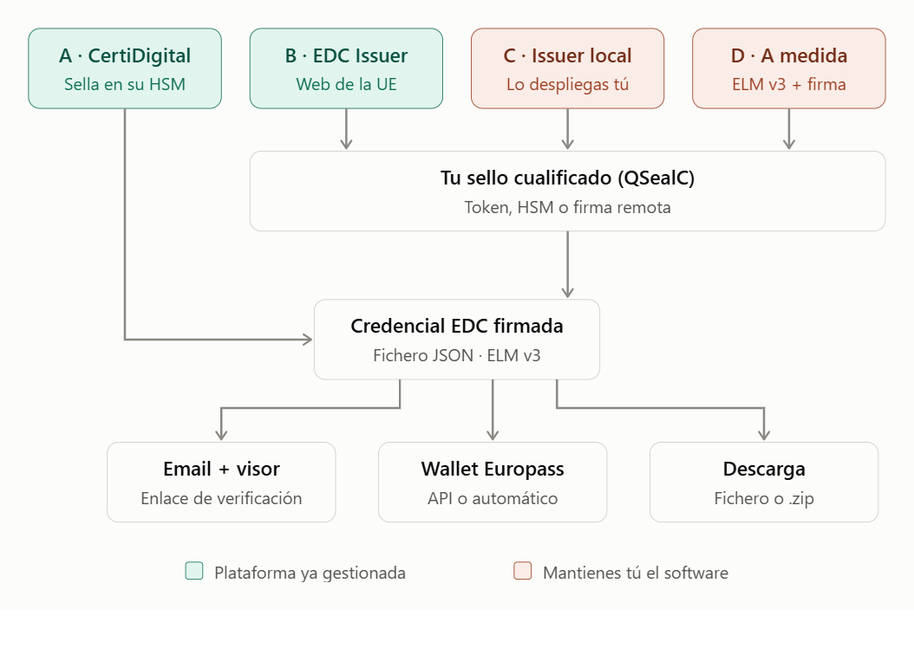
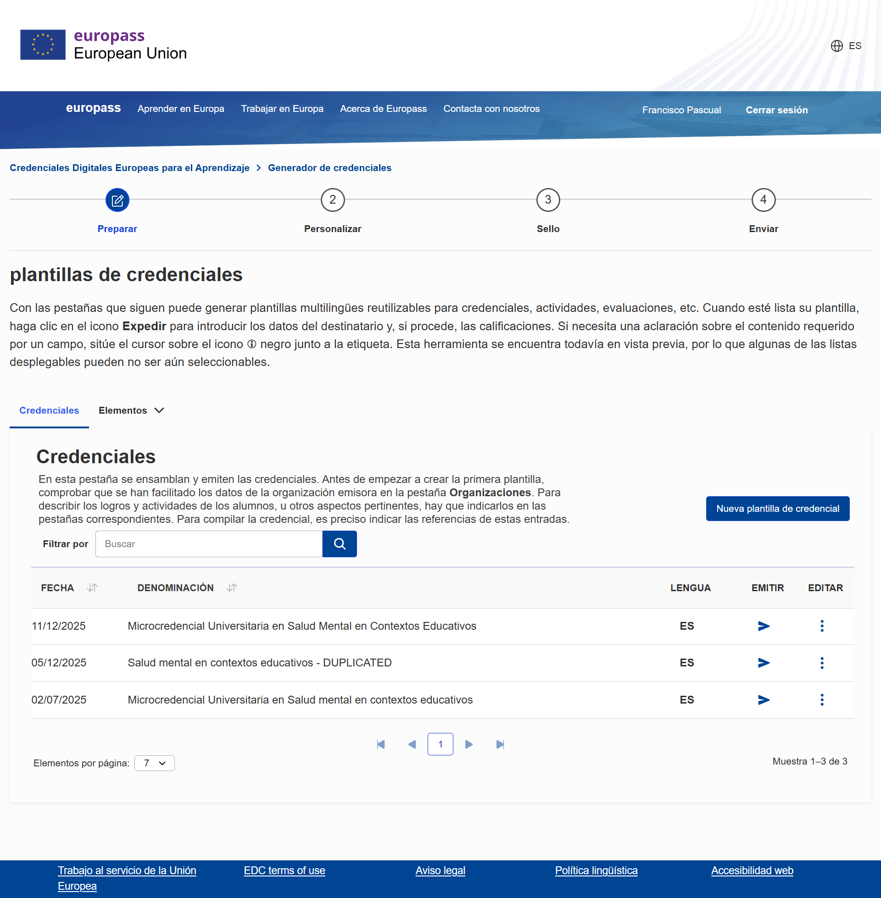
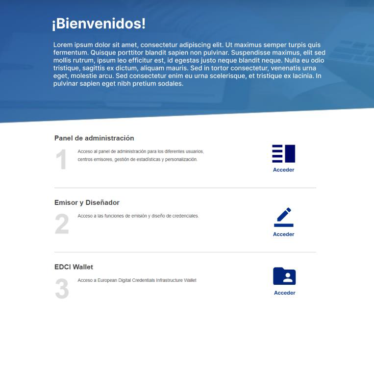
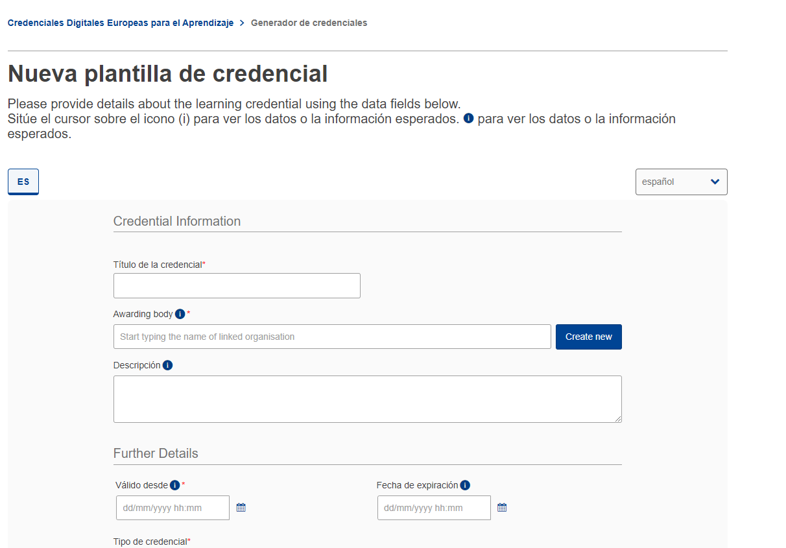
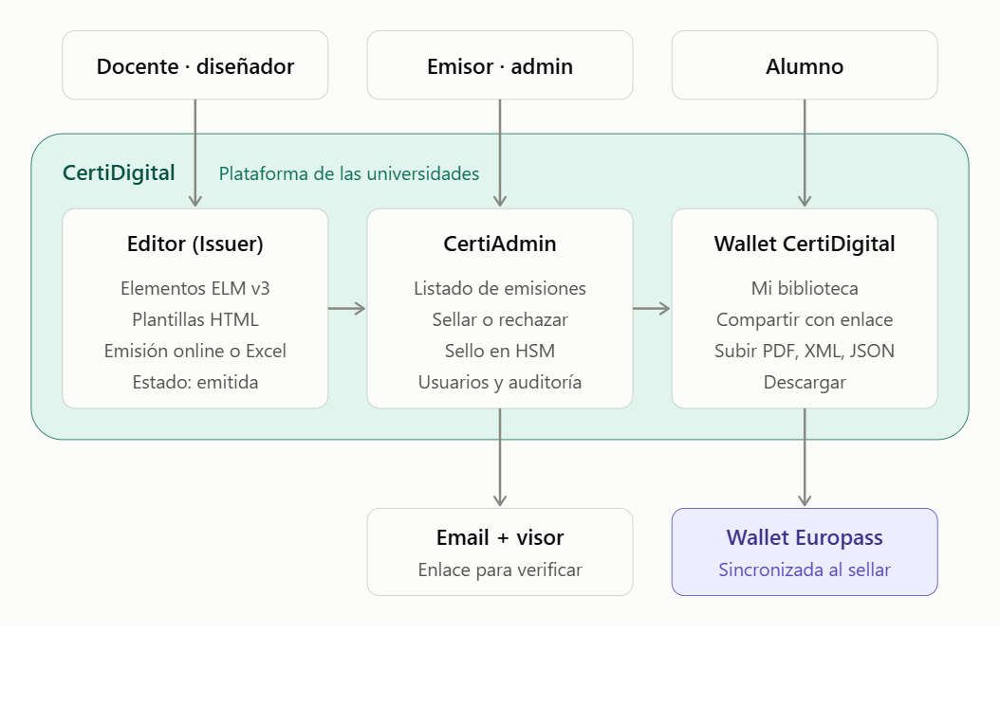
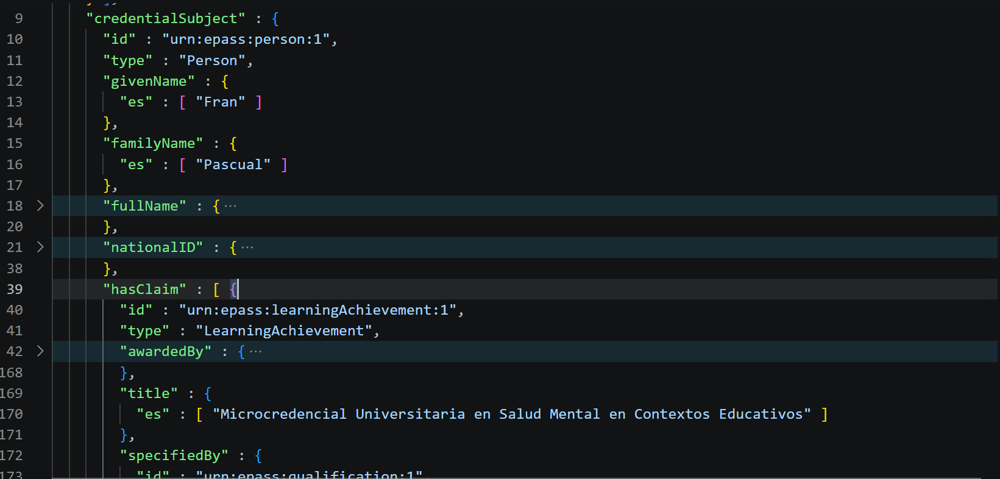

Emisión de credenciales en Europass

Opción B: EDC de Europass
Es la forma manual usando Europass directamente:
- Elaborar la plantilla de la credencial
- Emitir las credenciales a estudiantes
- Firmar con certificado (sello de órgano) usando la aplicación NEXU
- Depositarlas en la wallet de cada estudiante

Opción A: Certidigital
Apuntes para añadir contexto
Email "Información del proyecto y contacto" (junio 2022)
ibebea@di.uc3m.es
"Como contribución al desarrollo y ejecución del proyecto CertiDigital, las instituciones que deseen sumarse, habrán de incoporar una aportación económica mínima de 50.000 €, y en su caso una cantidad adicional para la contratación de personal adicional gestionado por la propia universidad."
Email "Certidigital: integración" (julio 2026)
Documentación de las API de CertiDigital
"A este respecto, ya que lo comentamos, seguimos dando pasos para terminar la instalación en RedIRIS y esperamos tener el sistema listo en unas semanas, momento en el que haremos pruebas, parametrizaremos a las universidades socias y una vez hecho esto podréis entrar las demás universidades privadas. La previsión para esto se nos va después del verano pero que sepáis que seguimos en ello tras salvar algunos obstáculos."
Aplicación
En los manuales se ve la apariencia de la aplicación, muy similar al EDC de Europass:

Como en Europass, también se crea la credencial junto con su información (logros, resultados del aprendizaje, capacidades ESCO, actividades, evaluación, etc.)

Según sus manuales "La sincronización entre la Wallet de CertiDigital y la de Europass representa un avance significativo en la gestión y accesibilidad de las credenciales digitales. Al estar sincronizadas, las credenciales que sean selladas en la plataforma de CertiDigital serán automáticamente enviadas y almacenadas en la Wallet de Europass, además de estar disponibles localmente en la propia Wallet de CertiDigital. De esta forma, conseguiremos tener un acceso a todas nuestras credenciales."

Tecnología, estándares e infraestructura
Paco Cruz Argudo (UC3M)
- Dificultades para la continuidad del proyecto
- 23 Universidades (6 coordinadoras + 17 early adopters)
- No hay mantenimiento
- Dificultades para la incorporación de nuevas universidades
- Api de integración?? Automatización
Gonçal (UAB):
- Menciona el proyecto CAMINS como alternativa en el entorno de Cataluña (Consorcio CSUC).
Opción C: desplegar en nuestros servidores
Montar el EDC en nuestros servidores. Esta posibilidad es en base a uno de los mails del soporte de Europass:
The full EDC infrastructure (Including the Online Credential Builder, Issuer, and wallet) is available open-source version in our code repository and can be installed locally by any interested organisation. Please take a look at https://code.europa.eu/qualifications-courses-and-credentials/ .
- Qué ganamos? La elaboración de plantillas y emisión de credenciales sigue siendo igual que en Europass o CertiDigital.
Opción D: a medida
Estudiando la información para developers...
- Generar las credenciales directamente
- Firmarlas con sello de órgano
- Depositarlas en Europass mediante la api Wallet
